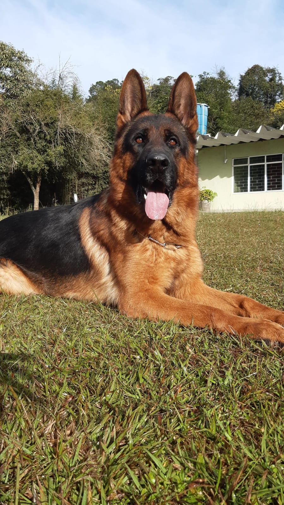
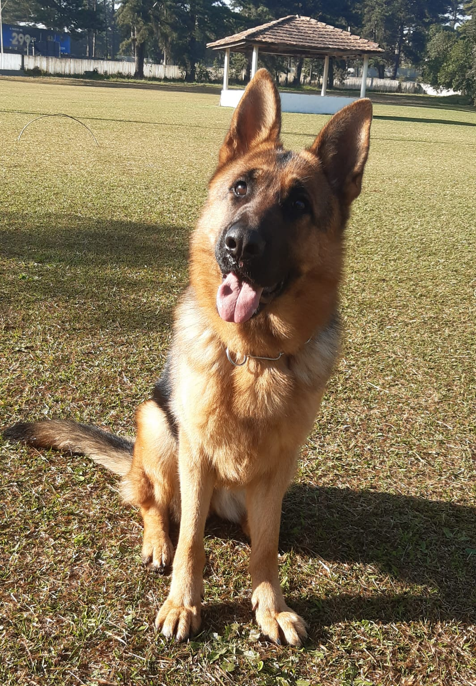
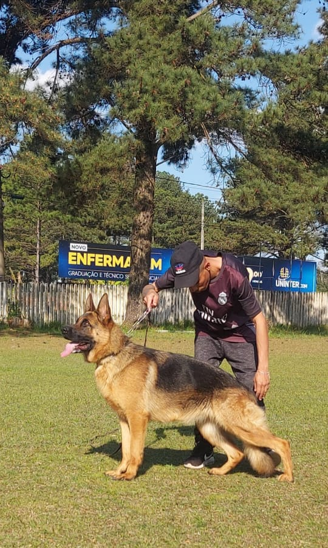
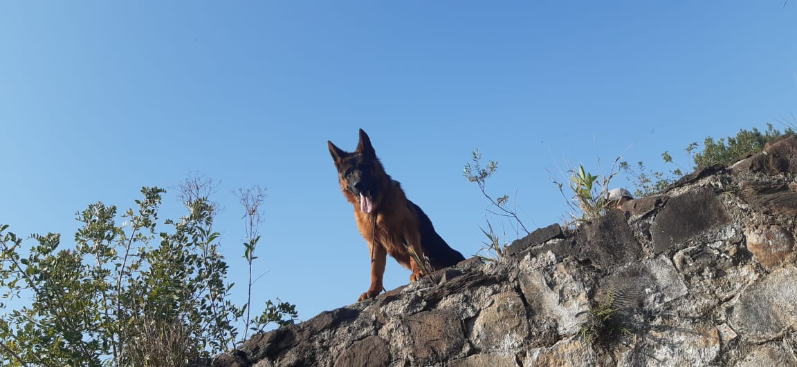
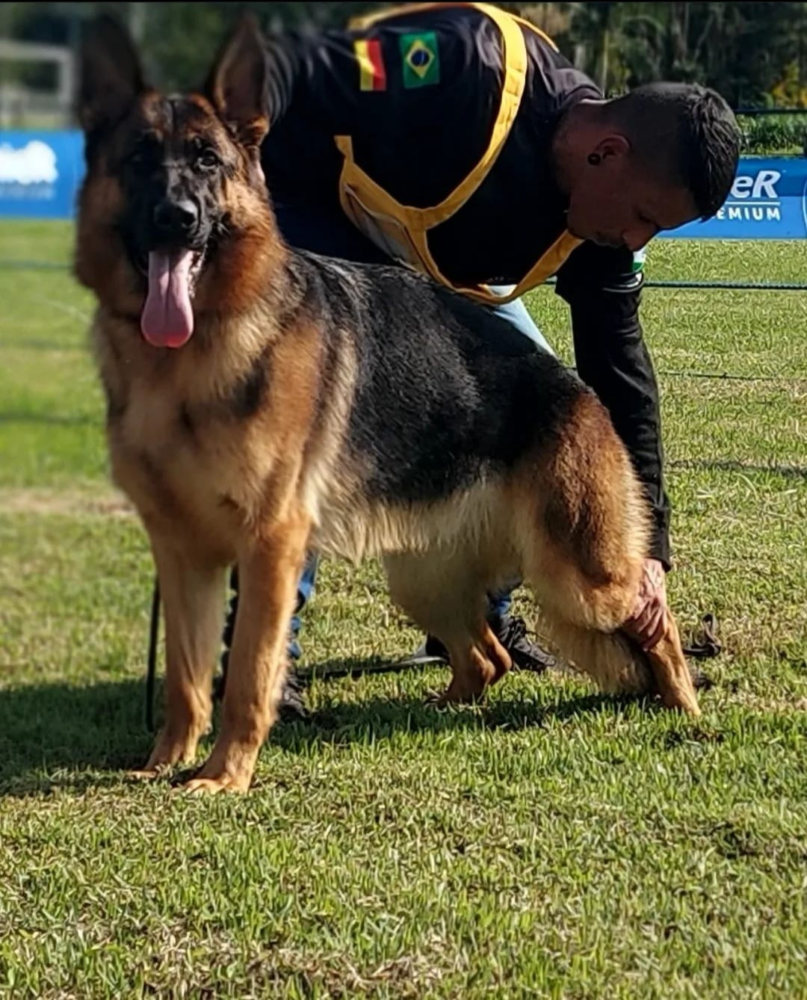

Especialistas na criação de Pastores Alemães de linhagem pura e excelência genética.
Fundado em 2021, o Canil Haus Brüder nasceu da paixão e dedicação à criação da raça Pastor Alemão. Especializado em criar cães de altíssima qualidade, o canil é focado em desenvolver e aprimorar as características excepcionais desta raça, como inteligência, lealdade, instinto de proteção e temperamento equilibrado. Desde o início, nosso objetivo no Haus Brüder é oferecer Pastores Alemães com genética superior, criados com responsabilidade e compromisso com o bem-estar animal. Com uma estrutura familiar, nossos cães são criados em um ambiente saudável e enriquecedor, que promove tanto o desenvolvimento físico quanto o emocional dos filhotes. Nossos Pastores Alemães são cuidadosamente selecionados para funções variadas, desde o companheirismo familiar até atividades especializadas como proteção, esportes caninos e trabalhos em forças de segurança. O compromisso do Canil Haus Brüder com a excelência é refletido em cada ninhada, que passa por um rigoroso processo de avaliação genética e de saúde.
O Pastor Alemão é uma raça originária da Alemanha, criada no final do século XIX para o pastoreio de ovelhas. Reconhecido por sua inteligência, lealdade e versatilidade, esse cão é ideal para funções como guarda, patrulha, resgate e até mesmo como cão-guia. Com um porte médio a grande, musculoso e pelagem densa, o Pastor Alemão é altamente adaptável e precisa de exercícios diários e estímulos mentais para se manter saudável e equilibrado. Sua personalidade protetora e amigável faz dele um excelente companheiro, desde que socializado corretamente. Além disso, a raça exige cuidados regulares com a saúde, alimentação balanceada e escovação semanal para manter seu bem-estar.

Macho
Pai: Kacique do Alto do Âgave
Mãe: Sophia I da Morada de Pedras

Fêmea
Pai: Leo vom Grafenbrunn
Mãe: Fly Vom Bendorf

Fêmea
Pai: Willas von Maikhus
Mãe: Taba vom Bendorf

Macho
Pai: Tell von Ghattas
Mãe: Fly vom Bendorf





Email: contato@hausbruder.com
Telefone: (41) 99599-5424
Localização: Itaperuçu-PR
⚡ Nova ninhada prevista para Março 2026!
🐶 Pais: Enzo do Panzza Lara & Uanah Vom Bendorf
📩 Reservas abertas. Entre em contato para mais informações.